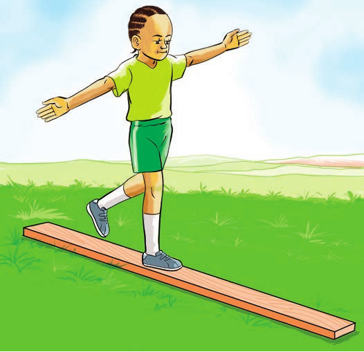

Tucheze mchezo
Kutembea juu ya ubao
Hatua za kufuata
- 1. Laza ubao mwembamba chini.
- 2. Simama wima ukiutazama ubao.
- 3. Tawanya mikono kisha panda juu ya ubao.
- 4. Tembea huku mikono ikiwa imetawanyika.
- 5. Rudia kwa kuongeza kasi.

Tucheze mchezo
